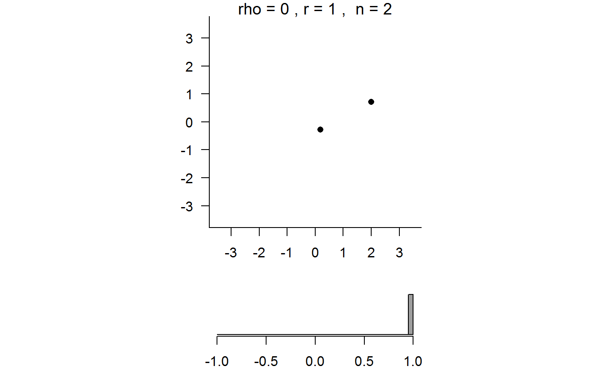
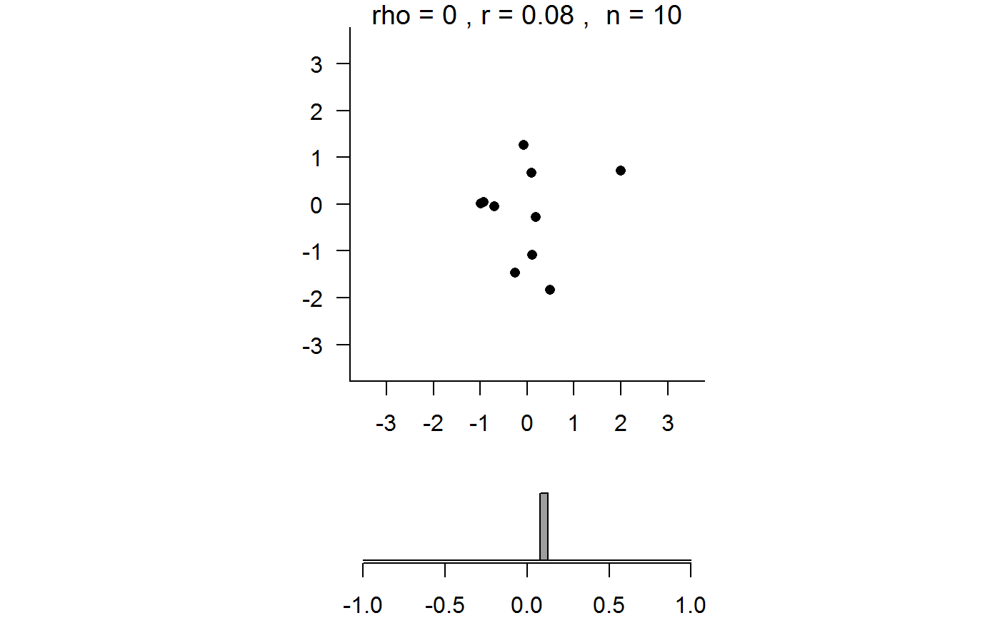

R/correlation_simulation_movie.R
corr_sim_movie.RdA movie to illustrate how the sampling distribution of the (Pearson product moment) sample correlation coefficient \(r\) depends on the sample size \(n\) and on the true correlation \(\rho\).
corr_sim_movie( n = 30, rho = 0, delta_n = 1, delta_rho = 0.1, pos = 1, envir = as.environment(pos) )
| n | An integer scalar. The initial value of the sample size. Must not be less than 2. |
|---|---|
| rho | A numeric scalar. The initial value of the true correlation \(\rho\). Must be in [-1, 1]. |
| delta_n | An integer scalar. The amount by which the value of the sample size is increased/decreased after one click of the +/- button. |
| delta_rho | A numeric scalar. The amount by which the value of rho is increased/decreased after one click of the +/- button. |
| pos | A numeric integer. Used in calls to |
| envir | An alternative way (to |
Nothing is returned, only the animation is produced.
Random samples of size \(n\) are simulated from a bivariate distribution with the property that the correlation between the two variables is equal to the value of chosen by the user. More specifically, the data are simulated from a bivariate normal distribution in which each of the variables has a mean of 0 and a variance of 1.
The movie contains two plots. On the top is a scatter plot of the simulated sample, illustrating the strength of the association between the simulated values of the variables. A new sample is produced by clicking the + button next to "simulate another sample of size n:". [Ignore the - button.] For each simulated sample the sample correlation coefficient \(r\) is calculated and displayed in the title of the top plot. The values of these sample correlation coefficients are stored and are plotted in the histogram in the bottom plot. As we accumulate a large number of values in this histogram the shape of the sampling distribution of \(r\) emerges.
The values of the sample size \(n\) or true correlation coefficient \(\rho\) can be changed using the respective +/- buttons. If one of these is changed then the histogram in the bottom plot is reset using the sample correlation coefficient of the first sample simulated using the new combination of \(n\) and \(\rho\).
movies: general information about the movies.
corr_sim_movie(n = 2)corr_sim_movie(n = 10, delta_n = 10)